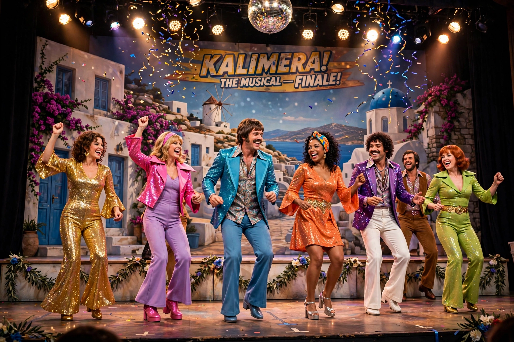

| Mamma Mia! | |
| Music | Benny Andersson, Björn Ulvaeus |
|---|---|
| Lyrics | Benny Andersson, Björn Ulvaeus (some with Stig Anderson) |
| Book | Catherine Johnson |
| Basis | Songs of ABBA |
| Premiere | 6 April 1999, Prince Edward Theatre, London |
Mamma Mia! is a jukebox musical written by British playwright Catherine Johnson, based on songs recorded by the Swedish pop group ABBA and composed by Benny Andersson and Björn Ulvaeus, former members of the band. The title is taken from the group's 1975 chart-topper "Mamma Mia". Conceived by producer Judy Craymer, the show opened in London's West End in 1999 and on Broadway in 2001, becoming one of the most successful musicals of all time and a pioneer of the modern jukebox musical.

On a Greek island, twenty-year-old Sophie Sheridan is about to marry Sky. Reading her mother Donna's old diary, she discovers that any of three men — architect Sam Carmichael, writer Bill Austin, or banker Harry Bright — could be her father, and secretly invites all three to the wedding. Donna, who runs a taverna on the island, is reunited both with the men and with her former bandmates, Tanya and Rosie, while Sophie tries to discover which man should walk her down the aisle. The story is told through ABBA songs including "Dancing Queen", "Take a Chance on Me", "The Winner Takes It All", "Knowing Me, Knowing You", "Super Trouper", "Lay All Your Love on Me" and "SOS"; the curtain call traditionally ends with an encore medley concluding in "Waterloo".
The original London production opened at the Prince Edward Theatre on 6 April 1999 and later transferred to the Prince of Wales and then the Novello Theatre. The Broadway production opened at the Winter Garden Theatre on 18 October 2001 and ran for nearly fourteen years and 5,758 performances, transferring to the Broadhurst Theatre in 2013. The show has been produced in dozens of countries and many languages, and is among the longest-running musicals in both West End and Broadway history, seen by tens of millions of people worldwide.
The musical was adapted as the 2008 film Mamma Mia!, starring Meryl Streep as Donna, Amanda Seyfried as Sophie and Pierce Brosnan, Colin Firth and Stellan Skarsgård as the three fathers; it became the highest-grossing live-action musical film of its time. A sequel, Mamma Mia! Here We Go Again, followed in 2018.
ABBA · Jukebox musical · Mamma Mia! (film) · Catherine Johnson